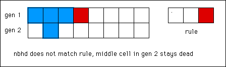

| For simplicity, we discuss binary (S = 2) automata. |
| The rule of a cellular automaton determines how the
collection of state space live and dead cells in the current generation evolves into the collection
of live and dead cells in the next generation. |
| For each of the
SN neighborhood configurations,
the rule specifies whether the configuration gives rise to a live
cell or a dead cell. Call those configuations giving rise to a live cell
live configurations; call those configuations giving rise to a dead cell
dead configurations. |
| Then for each cell in the current generation of the state space, the nbhd is
examined and compared with the rule. In the nbhd of cell number i is a live configuration,
then cell number i is alive in the next generation. If the nbhd of cell number i is
a dead configuration, then cell number i is dead in the next generation. |
| For example, to apply the rule |
 |
| we look at the nbhd of each cell (shaded in blue in gen 1 pictured below), and
if the pattern matches the rule, make the middle cell in the next gen (also shaded
blue) alive. Otherwise, the middle cell is dead. |
| For example, here we compute the second generation if the
first has a single live cell. |
|  |
| Click the picture for the nbhd of the next cell. |
|
| Continuing this for a few more generations produces
the expected pattern. |
|
| Click the animation to stop. |
|